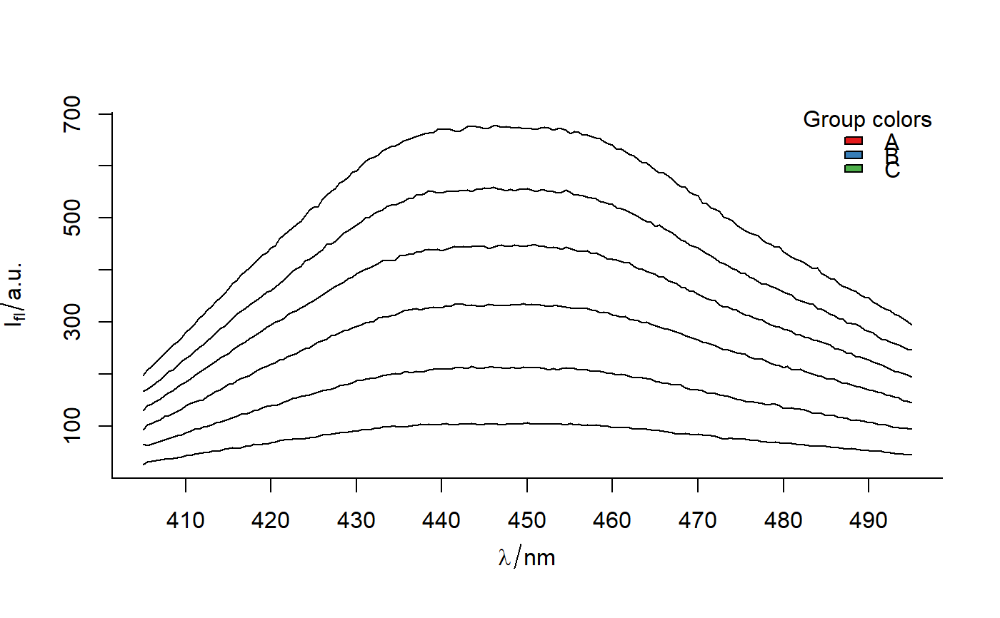

Plot a color palette in a hyperSpec object,
which was added with function hyAdd_color.
plot_hyPalette(sp = NULL, by = ".color", palette = hyGet_palette(sp), cex = if (as.legend == FALSE) 1.2 else 1, Title = if (!is.null(sp)) "Group colors" else "Colors", as.legend = FALSE, xpd = NA, x = "topright", y = NULL, bty = "n", ...)
| sp |
|
|---|---|
| by | Either a name of factor variale in |
| palette | A list of color names or color codes. |
| cex | character expansion factor relative to current
|
| Title | The title. |
| as.legend | Logical. If |
| xpd | A logical value or |
| x, y | the x and y co-ordinates to be used to position the legend.
They can be specified by keyword or in any way which is accepted
by xy.coords: See "Details" in |
| bty | The type of box to be drawn around the legend. The allowed values are "o" and "n" (the default). |
| ... | Other arguments to be passed to |
A plot made with R package graphics.
Other spHelper plots: check_palette,
layer_spRangeMean,
plot_colors, plot_spCompare,
plot_spDiff,
plot_spDistribution,
qplot_confusion,
qplot_crosstab,
qplot_infoDim, qplot_kAmp,
qplot_kSp, qplot_prediction,
qplot_spRangeCenter,
qplot_spStat, qplot_spc,
rmExpr, rm_stripes,
stat_chull
Other spHelper functions for spectroscopy and hyperSpec: IQR_outliers,
binning, file,
gapDer, hy2mat,
hyAdd_Label_wl,
hyAdd_Labels_PAP_PD_2014,
hyAdd_Labels_TD2009, hyAdd,
hyDrop_NA, hyGet_palette,
hyRm_palette, mad_outliers,
mean_Nsd, median_Nmad,
prepare_PAP_RK_2014__MATLAB_failui,
read.OOIBase32,
read.OceanView.header,
read.OceanView, read.sp.csv2,
read3csv2hy, replace_spc,
sd_outliers, spStat,
sp_class_perform
#----------------------------------------------------- # Example 2 plot_hyPalette(by = "RED color", palette = "#ee0000")#----------------------------------------------------- # Example 3 # Use data 'sp' from example 1 # The legend does not make sense in this context. It's just an example. plot(flu)#> Error in as.double(y): cannot coerce type 'S4' to vector of type 'double'plot_hyPalette(sp, "gr", as.legend = TRUE, cex = 1)